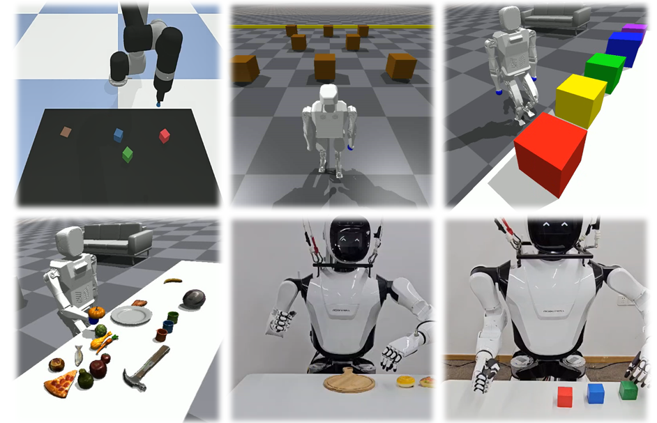

|
Yanjiang Guo Hi! I am a third-year PhD student majoring in computer science at IIIS, Tsinghua University, advised by Prof. Jianyu Chen. Previously, I obtained my bachelor's degree from Dept. of EE, Tsinghua University in 2022. I have also spent time at Tencent, SenseTime, RobotEra and Shanghai Qi Zhi Institute as interns. My research focuses on Embodied AI and Generative Models, with a particular emphasis on training robot foundation models capable of performing a wide range of tasks in our daily lifes. I believe that co-training with internet data and leveraging pre-trained generative models (e.g., VLM, video diffusion model, etc.) are crucial for developing effective generalist robot policies. Email / Scholar / Twitter / Github "Set your course by the stars, not by the lights of passing ships."
Honors and Awards:
|

|
Selected PublicationsPapers related to Robotic Foundation Model training are highlighted. |
|
|
UP-VLA: A Unified Understanding and Prediction Model for Embodied Agent
Jianke Zhang*, Yanjiang Guo*, Yucheng Hu*, Xiaoyu Chen, Jianyu Chen Arxiv, 2025 arXiv VLA Robotic Foundation Model. We incoperate both multi-modal understanding (MMU) and future prediction into VLA model, enhancing both high-level semantic knowledge and low-level visual dynamics. |
|
|
Video Prediction Policy: A Generalist Robot Policy with Predictive Visual
Representations
Yucheng Hu*, Yanjiang Guo*, Pengchao Wang, Xiaoyu Chen, Yen-Jen Wang, Jianke Zhang, Koushil Sreenath, Chaochao Lu, Jianyu Chen Arxiv, 2024 project page / arXiv / twitter / 量子位 Video Generation (or World Model) based Robotic Foundation Model We finetune a general-purpose video diffusion model into manipulation-focused video prediction model to guide policy learning. |
|
|
Improving Vision-Language-Action Model with Online Reinforcement Learning
Yanjiang Guo*, Jianke Zhang*, Xiaoyu Chen*, Xiang Ji, Yen-Jen Wang, Yucheng Hu, Jianyu Chen ICRA, 2025 arXiv / twitter1 / twitter2 VLA Robotic Foundation Model. We make some initial exploration on leveraging online RL to improve the VLA model! We notice that online RL for VLA can be extremely unstable and thus we adopted a iterative approach. |
|
|
Prediction with Action: Visual Policy Learning via Joint Denoising Process
Yanjiang Guo*, Yucheng Hu*, Jianke Zhang, Yen-Jen Wang, Xiaoyu Chen, Chaochao Lu#, Jianyu Chen# NeurIPS, 2024 project page / code / arXiv Video Generation (or World Model) based Robotic Foundation Model We jointly predict future images and robot actions in a unified DiT network, transfering physical knowledge from internet video data to robots. |
|
|
HiRT: Enhancing Robotic Control with Hierarchical Robot Transformers
Jianke Zhang*, Yanjiang Guo*, Xiaoyu Chen, Yen-Jen Wang, Yucheng Hu, Chengming Shi, Jianyu Chen CoRL, 2024 arXiv / twitter / 机器之心 VLA Robotic Foundation Model We finetune pretrained VLM into VLA models with hierarchical transformers, keeping the generalization ability but also much higher control frequency. |
|
|
Advancing Humanoid Locomotion: Mastering Challenging Terrains with Denoising World Model Learning
Xinyang Gu*, Yen-Jen Wang*, Xiang Zhu*, Chengming Shi*, Yanjiang Guo, Yichen Liu, Jianyu Chen RSS, 2024 (Best Paper Award Finalists) project page / code / arXiv / 机器之心 We train humanoid robot to master challenging terrains such as stairs, slopes, and snow grounds with zero-shot sim2real transfer. |
|

|
DoReMi: Grounding Language Model by Detecting and Recovering from Plan-Execution Misalignment
Yanjiang Guo* , Yen-Jen Wang*, Lihan Zha*, Jianyu Chen IROS, 2024 project page / arXiv We leverage LLM to pefrom both planning and monitoring, with a fine-tuned VLM as detector. |
Other Publications
Decentralized Motor Skill Learning for Complex Robotic Systems
Zheng Wu, Yichen Xie, Wenzhao Lian, Changhao Wang, Yanjiang Guo, Jianyu Chen, Stefan Schaal, Masayoshi Tomizuka ICRA,2023 Reinforcement learning with Demonstrations from Mismatched Task under Sparse Reward Yanjiang Guo, Jingyue Gao, Zheng Wu, Chengming Shi, Jianyu Chen CoRL, 2022 |
|
Source code from Jon Barron. |